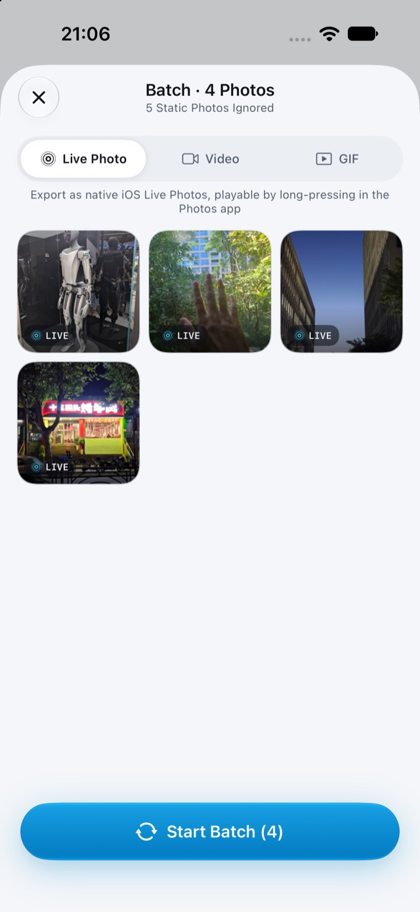
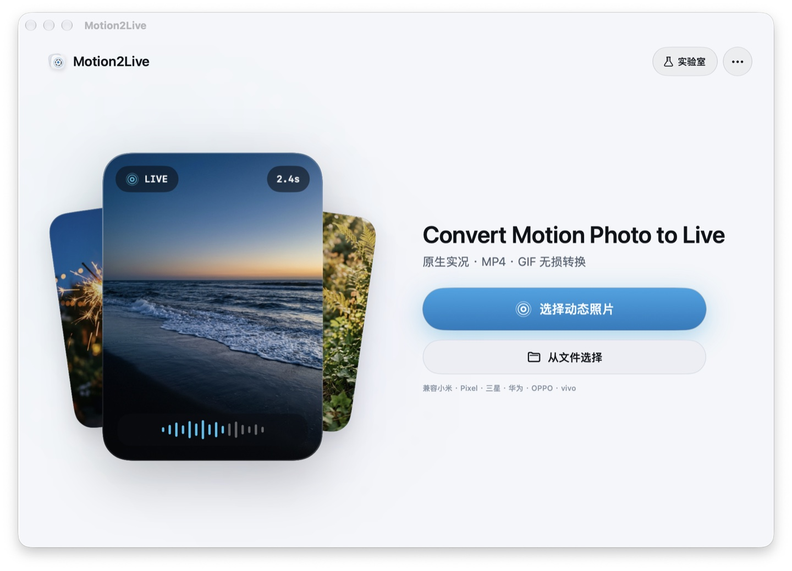
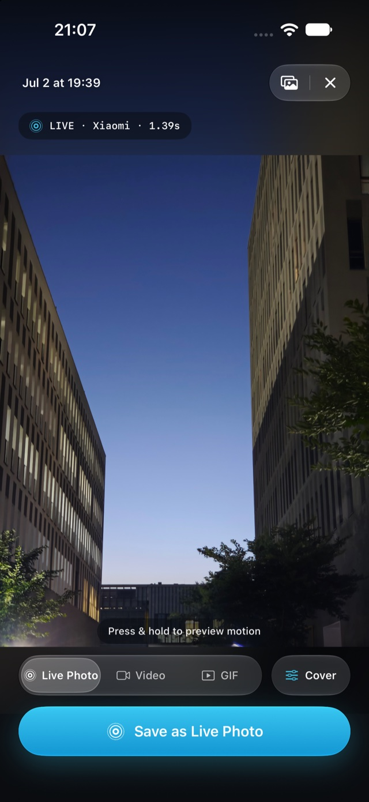

直接导入 iOS 相册
前半段 JPEG 正常显示，尾部 MP4 数据被系统忽略，长按无反应。
从安卓传到 iPhone 的动态照片，视频其实还在原图里。Motion2Live 在本机解析小米、Pixel、三星、华为、OPPO 与 vivo 的文件结构，导出为原生 Apple 实况照片、独立视频或 GIF，也能把 Apple 实况转回各品牌安卓动态照片。
支持 iPhone、iPad 与 Mac（iOS 16+ / macOS 14.4+），以 MPL-2.0 协议开源，纯离线运行且无需注册账号。
前半段标准 JPEG 负责静态显示并保存 EXIF 拍摄参数、方向与 GPS 坐标。转换时原样保留。
小米、Google Pixel、三星等安卓手机把动态视频直接拼接在 JPEG 文件末尾，并用 XMP 字段或 SEF 尾部标记记录偏移位置。Apple 相册只认配对的静图与 QuickTime 媒体标识符，因此直接导入时只会显示前半段静态画面。Motion2Live 读取原文件中的视频字节，写入 Apple Maker "17" 与配对标识，让系统相册把它识别为真正的实况照片。
前半段 JPEG 正常显示，尾部 MP4 数据被系统忽略，长按无反应。
提取原视频流并按 Apple 规范配对封装，长按直接播放，拍摄时间与 GPS 原样保留。
换机迁移、跨系统互传原图，或者把 iPhone 拍的实况发回安卓相册，都在同一个工具里完成。
小米（含 HyperOS 2 与早期 MicroVideo）、Google Pixel、三星（含 SEF 容器）、华为、OPPO 与一加、vivo，以及通用 MP4 拼接格式。
写入系统相册即可长按播放，保留原图 EXIF、拍摄时间与地理坐标。
直接提取内嵌视频片段，便于剪辑或发送给不支持实况的聊天软件。
按设定帧率与尺寸采样输出，方便直接贴进文档或社交评论区。
直接从系统相册选取任意 Apple Live Photo。
读取配对静图（HEIC / JPEG）与 QuickTime MOV 视频轨道，以及原始拍摄时间戳与地理位置。
非 JPEG 静图（如 HEIC）在保留方向与 EXIF 的前提下转为高质量 JPEG 并清理冲突旧标签；配对视频优先通过 Passthrough 直接混流为 MP4，按你指定的目标品牌结构封装为单个 .jpg 文件，并在导出前完成容器自校验。
同步文件拍摄时间戳，通过系统分享面板或「文件」App 保留原始字节导出。
很多动态照片的默认封面恰好落在眨眼或晃动的那一瞬。拖动胶卷时间轴到毫秒级位置，选定清晰的静态帧作为新的实况封面，同时保留原图拍摄参数与位置信息。打开元数据检查器，还能查看静图与视频的体积占比、编码规格与原始 XMP 字段，一键复制摘要用于排查问题。
批量导入相册照片时，Motion2Live 会先逐张探测容器结构，自动跳过不含视频流的普通静态图片。导出过程采用串行管线控制内存占用，整批转换为实况照片、视频或 GIF。

在相册、「文件」或聊天软件里点一下分享，即可在扩展面板中原地预览并保存为实况、视频或 GIF。想把任意一张照片和一段短视频合成为 Apple 实况或安卓动态照片，打开顶部「实验室」即可双向拼装。
无需切回主应用，在系统分享表单中直接识别并保存为实况、视频或 GIF。
将任意静图与短视频封装为 Apple Live Photo，或指定品牌格式的安卓动态照片。
全部界面基于 SwiftUI 与 Apple 原生媒体框架构建。在 iPhone 与 iPad 上可直接从相册或分享菜单处理；在 Mac 上支持从访达直接拖入动态照片或批量导入本地文件夹。界面支持简体中文、英文、日文、韩文、法文、德文与西班牙文 7 种语言。


Motion2Live 依赖系统原生框架完成所有二进制解析与音视频混流，不接入任何第三方 SDK，代码以 MPL-2.0 协议开源。
请尽量通过「文件」传输、AirDrop/局域网原图传输、数据线或云盘原文件下载，避免经过会自动压缩图片的聊天渠道。只要原 .jpg 文件尾部还保留 MP4 数据，Motion2Live 就能识别。
不会。导出 Apple 实况照片、更换关键帧封面以及逆向导出安卓动态照片时，都会保留原始 EXIF 拍摄时间、设备信息与 GPS 元数据，并同步文件时间戳。
常见原因是图片在传输途中被社交软件或网盘重新压缩，导致拼接在 JPEG 末尾的 MP4 字节被剥离。你可以用 App 内的「元数据检查器」确认原文件是否仍包含视频流。
专门适配小米（含 HyperOS 2 与早期格式）、Google Pixel、三星（含 SEF 格式）、华为、OPPO/一加与 vivo，并提供通用 MP4 拼接兜底识别器。
在导出时选择对方手机对应的品牌格式（如小米、三星或 Pixel），并通过「文件」或发送原图传给对方，即可在对应品牌的系统相册中按原生动态照片识别。
项目以 Mozilla Public License 2.0 协议在 GitHub 开源，纯离线运行、无需注册账号，可在 App Store 获取。